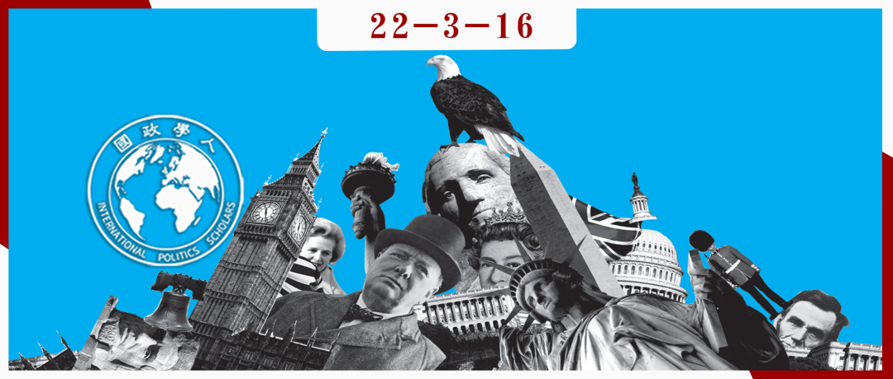

收录于合集

白人的“国关”与国际关系学科的等级制
作者： 戴维·莱克（David Lake）系美国加州大学圣地亚哥分校政治学杰出教授、美国艺术与科学院院士，曾任美国政治学会主席、国际研究协会主席、国际政治经济学会创始主席。
编译： 黄紫蓝（国政学人编译员，悉尼大学硕士，研究方向：国际关系理论、流行文化与世界政治）
来源： Lake, D. (2016). White Man’s IR: An Intellectual Confession. Perspectives on Politics , 14(4), 1112-1122.

导 读
本文是著名国际关系学者戴维·莱克对国际关系理论构建与国际关系学科发展现状的个人感悟，发人深省。作者认为我们通常认为国际关系理论是对国际关系互动规律的客观解释。然而，这是一种误解。事实上， 理论的构建离不开个人的生活经验和主观直觉。国际关系理论是美国学者主导创建的，而美国学者中又有85%的白人和68%的男性。 所以，当前主流的国际关系理论和研究是美国男性白人凭借个人生活经验直觉来塑造的，这很可能是不平等的、不客观的现象。由于人类和学者不擅于自我批评，导致了研究者的研究被不断强化，从而抑制了学科理论发展的多样性。莱克承认，自己构建的国际关系中自上而下的等级制理论同样与自身作为生活在特权国家美国的白人男性身份及生活经历有关。如换作其他人种、国家、族群身份的学者来思考等级制，或许是另一种解释，从而有利于国际关系理论的多样化发展 。作者认为国际关系学科发展也存在着等级现象，美国的白人男性学者主导了国际关系学科的主流议题和前沿发展的方向，拥有学科体系综合评价的特权，导致国际关系学科研究缺少足够的包容性和多样性。 最后，莱克对打破学科等级制提供了一些建议。可以说，莱克本人不仅对国际关系理论发展具有重要贡献，同时对当前国际关系学科所面临的问题有着深刻的认知，具有自我批判精神。 打破国际关系学科的等级制，是国内外学界，尤其是中国等非西方国际关系学界应当努力和重视的，而不是将美国传统的西方国际关系理论奉为永恒的真理。国际关系研究虽无国界，但有等级。
编 译
01
** 国际关系理论不是客观的，而是个人主观塑造的**
我主要从我自己的学术生涯出发，阐述了 加强国际关系研究中性别、种族和多样化的必要性。虽然理论通常被认为是“客观的”，但这些理论的内容及其解释力最终是由主观的生活经验塑造的。 不同的人有着不同的生活经历，他们会对世界如何“运作”产生不同的直觉，因此会写出不同的理论来捕捉这些直觉，进而探索更大的政治模式。我在这里解释了 自己作为一名享有特权的白人男性，个人生活经历是如何塑造了本人以“国际等级制”为学术研究主题的思想脉络的？ 在此基础上，我还将探索如何从专业实践提升为学科中的“把关人”。这类人大多拥有相似的生活经历，因此，对于该领域中什么是“好”作品的直觉，反过来又加强了这些专业实践和偏好。最后一节则重点讨论削弱学科等级制和扩大进入专业研究途径的问题。
作为学者，我们的个人背景和经验必然会影响我们提出的问题，并通过我们建立的理论来寻求答案。生活经验通常是不知不觉地影响着我们的研究、理论和理解，就像我们戴上眼罩后会限制我们“看到”的东西。这个道理对人来说是如此，对学科来说亦如是。在这篇文章中，我专注于国际关系 (IR) 领域，我相信这里发展的论点扩展到了政治科学甚至整个社会科学。 至少在美国，国际关系学者是一组相对同质的个体，主要是男性（68%），且大多数是白人（85%）。这些特征既导致了学者们相似的生活经历，从而产生问题、方法和成果的趋同。 遗憾的是，有些问题看起来不相关，因此未被提出，某些理论未经审查，只是因为它们与我们的直觉以及其他未经检验的预测没有产生共鸣。
如果组成我们学科的这些学者变得更加多样化，生活经验差异更大，我们的学术工作和对世界的理解将得到扩大和丰富。不管个人还是集体，促进大学和社会的多样性本身就是一个重要的目标，促进学院的多样性也将使我们成为更好的学者。这是我想在这篇文章的后部分着重讨论的话题。
很多人可能已经理解了多样性和学术之间的关系，有些人可能是通过自己的生活经历理解到，而有些人是通过学术研究。 这种关系在我对自己作品的反思中慢慢地显现出来。 这是从一个痛苦的自我怀疑开始的，逐渐发展成为我对学术作品的衡量标准。 我现在更清楚地看到 ，首先，我自己的特权生活经历是怎样反映在理论中的，其次，如果我周围不只是其他白人男性，而是一个更多元化的研究群体，我会成为一个更好的学者。 因为人是生活经验的产物。作为一名白人男性，我无法完全摆脱60年来一直戴着的“眼罩”。然而，我无法完全消除那些障碍。如果其他有着不同生活经历的人也能充分地参与其中，挑战和揭示学术中隐藏的假设和默认项，我的工作就会变得更好。尽管我试图理解自己的偏见，但我知道，如果我能与其他有着不同生活经历的学者接触，我可能会对世界政治有更深刻的理解。
根据我自己在学术界的职业生涯，我想在本文的其余部分中详细阐述提高国际关系学科（IR）多样性的必要性。 虽然理论应该是客观的，但这些理论的解释能力最终是由主观的生活经验塑造的。拥有着不同生活故事的人会对世界如何运作产生不同的直觉，从而写出不同的理论来捕捉这些直觉，进而寻找出更大的政治模式。 虽然两者最终都得到了现实世界的验证，但对于白人男性来说，一项“合理的”理论方法可能与有色人种以及女性的同样"合理的"理论有很大不同，正是这种差异表明了为什么高校中的多样性很重要。显然大部分人正是由于共存，而形成了普遍的经验和一般的理论。但在一定程度上，我们的个人生活经历仍然对我们看待世界的方式产生重大影响。
然而，我想先承认，我完全意识到，自己曾参与过这篇文章中批评的所有实践和偏见，反之也从这些相同的实践和特权中受益。我也完全意识到，我在这篇文章中所写的并无多少创新之处。事实上，这里提出的每一个观点在其他地方都被提出过，而且通常是由有色人种学者和被排除在该职业“主流”之外的女性提出的，他们的观点更有说服力。最后一节中提出的建议没有一条是原创的，事实上，大多数建议已经以某种或另一种形式在更进步的院系和大学中实施。然而，正是作为“制度”的受益者，我希望我的评论能够产生一些影响。我感到抱歉，不是因为这篇文章缺乏独创性，而是因为我在理解这些重要问题上太过迟钝了。
02
** 理论构建基于直觉，来自生活经验**
所有的理论最终都基于直觉，这些直觉通常是含蓄的，模糊地形成了关于宇宙、社会生活或政治如何"运作"的见解。 心理学家已经证明，即使是年幼的孩子也有直观的物理学理论（例如，与物体的运动有关的）和心理学理论，特别是与社会互动有关的理论。尽管这些直觉是如何形成的还没有被完全理解，但与环境和其他人互动的经验是核心原因。考虑到后者，如果政治不是同样被“封装”在群体动态和决策的直觉模型中，其对个人的影响也是非比寻常的。即便是人在年少的时，直觉也可能在随后的学科训练中产生，在训练中，成员被教导“看到”某些东西而不是其他的。事实上，如果训练起效，“已知”就会变成直觉。
我的直觉是，许多直觉，尤其是在社会科学领域，都来自生活经验。 所谓生活经验，我指的是一个人与环境的互动，更重要的是，与他人的互动。你小时候是怎么长大的？你接触新思想和新地方的频率是多少？你与谁有过频繁或重要的互动？…潜在的重要互动范围太大了。由于先天与后天之间的争论永远无法解决，所以我们只能说，经验和遗传物质相互作用，塑造了我们是谁。当然，每个人及其生活经历都是独一无二的，这就是让我们成为个人（individuals）的原因。
然而，有些生活经历是被模式化的。 作为人类，我们有很多共同之处， 但这些模式的子集会通过社会实践与归因特征联系在一起，在其他维度上创造了社会建构的种族、性别不平等的区别。 重要的是，这里所指并非一次性互动（不管某些互动对个人有多重要），而是烙印在我们身上的 重复性互动 。这些 有规律可循 的互动 从生命早期就开始了，体现在我们的 社会规范和实践 。例如，给小男孩穿蓝色衣服，送他们卡车作为礼物，给小女孩穿粉色衣服，送她们洋娃娃。个别父母和家庭可能试图打破这些模式的交互——购买并鼓励男孩子玩厨房玩具，但他们只能在一个更大的被模式化的社会中作出有限的改变。
归因特征并不能决定生活经历，但它们往往是向他人（个人和整个社会）发出关于如何“对待”特定个人的信号。 通过这种方式，归因特征既是生活经历的原因，又是相关因素。例如，20 世纪美国白人男性的生活经历与女性、黑人、西班牙裔和其他少数族裔的生活经历有着相似之处。 对于这里的论点来说，真正重要的不是白人或男性（或他们的遗传标记），而是与生活经历相关的属性。
生活经验塑造了我们的直觉，包括对社会生活和政治的直觉。 甚至在接触政治学的正式研究之前，我们几乎肯定会从童年时期形成的政治直觉开始。普遍来说，人是可靠可信任的吗？“制度”是普遍“公平”还是被小部分人操纵的工具？当我说话时，其他人真的会听进去吗？这些问题的答案往往未经验证，因此是“凭直觉获知的”。一旦被引入人类行为和政治的研究，我们就会被某些理论所吸引，这些理论通常是在广义的哲学层面上表述的，看似成功捕捉到了这种生活经验的某些显性维度。 在国际关系中，学者们经常被诸如现实主义、自由主义、新自由制度主义、马克思主义、建构主义、女性主义、后现代主义等特定方法所吸引。这些所谓的范式并不是任何系统的理论，而是更多关于人类本质及其社会互动的直觉。 作为“现实主义者”的自我认同很少说明学者的实际研究要比他对世界如何运作的直觉更重要。在这种情况下，反映了一种直觉，即个人聚集到所谓“国家”这一集体中，追求权力，而政治本质上是竞争性的，将世界看作是一个零和博弈、自相残杀的世界。
作为学者，我们的工作是，批判地评估我们自己的直觉和身边其他人的直觉。对于批判理论家来说，评估需要展露我们的直觉（或内在假设），问它们是否在性质上或道德上存在不公正。对于实证主义者来说，批判性评价意味着建立或完善理论，将我们的直觉整合在一起，推导出可检验的命题，使假设可以经受住潜在驳论的挑战。不同于政客或官僚，他们大多生活在直觉的世界里，经常接受或塑造证据，以制造出契合他们“过人之见”的共鸣。学者可以，也应当同时具备直觉和批评能力。学者有别于其他人的地方就在敢于检验我们直觉演绎的有效性，然后用一些道德标准或经验记录来检验、揭示该直觉的含义。
当然，人类不善于自我批评，学者也不例外。 在某种程度上，我们的直觉是生活经验的产物，它们在我们看来是自然的，反映了我们所熟知的生活。当我们周围的人都有类似的生活经历时，我们的直觉会进一步自然化，甚至具体化。因此，拒绝或甚至改变一个人的直觉是困难的，甚至是情感上的痛苦。正因为我们的直觉深深根植于我们的（也许是无意识的）头脑中，接受它们在道德上有缺陷或在理论上是无效的，可能会给我们自身造成创伤。 正是这个原因，大多数社会科学家并不排斥他们直觉上认为有吸引力的理论。学者们倾向于假设（尽管是含蓄的）他们的生活经历比实际情况更常见，然后简单地修筑新的防御线，或者对基本相同的直觉只做轻微的修改。 因为我们的直觉通常至少在一定程度上是“正确的”，或者捕捉到社会和政治生活的某些显著方面。直觉往往能经受住怀疑，可能并非毫发无伤。不过，想法确实是会改变的。与此同时，我们的直觉对我们才是最真实的，因此即使在面对批评时，理论的解释力仍非常强大。
然而，自我批评的困难和识别我们自己直觉的偏好，是促进学术界多样性的重要动力。 由于生活经验和直觉的不同，政治或社会生活中更普世的一些方面，可能看起来不重要，且容易被部分理论家完全忽略，但对某些理论家可能是非常突出和重要的。所以，他们所写的理论会有所不同，一些理论则被证明是更优秀的，更能解释社会生活的模式，而另一些则不会。但是， 作为学者，我们的责任不是假定生活经验的普遍性，而是意识到差异的存在，揭示并清楚地表达它们。那时，才能检验或观察到那些背离当下经验和道德标准的理论。
03
** 作为生活在特权国家的白人，我构建了自上而下的等级理论**
国际关系的原始假设是，国际体系是无政府状态的，或者说不存在高于国家的权威。这一假设又建立在一个更深层次的概念之上，这个概念根植于正式的法律权威概念，它意味着国家的地位是平等的，即我们现在所理解的“主权”这个词。这种论断源自艾默里奇·瓦泰尔（Emmerich Vattel），他将自由主义理论延伸到国家层面，认为既然“矮子和巨人一样是人，那么一个小共和国和一个最强大的王国一样，都是一个主权国家。”国际关系是无政府主义的，是由形式上平等的国家组成—— 这种假设可能是主要由白人男性学者组成的共同生活经验或直觉的产物。包括国家在内的主体在物理特征上可能各不相同，但在其他方面地位平等。这就很符合白人男性（包括我自己）头脑中固有的政治模式。 当然，这是一种推测，可能无法证明。但反思说明，如果学者对自己诚实，那么这个建议可能有一定的道理。我把同样的论点扩展到“暴力”在国际关系中的作用，强调武力作为讨价还价的基础，以及“高政治”（安全、保护他人的目的）对“低政治”（经济、人权、环境以及其他同类议题）的重要性。我将在下一节中更全面地阐述这一点。大多数白人和男性学者认为研究和解释重要的，反映出他们对共同的政治生活经历和直觉。
从我的职业角度来看，为白人男性说话是有风险的。当然以上泛泛的讨论充其量也只是猜测。但我可以为自己代言。承认上述自我批评的困难，让我反思了一下自己的研究，以及直觉在我选择理论方法时可能起到的作用。我要向那些不熟悉我的工作的人说明，在我职业生涯的大部分时间里，我一直关注“国际秩序”和“领导力”问题。人们的主要直觉是，国际秩序在一定程度上是由占主导地位的国家在国际体系中的领导力产生的，这种直觉在过去30年里获得了共识。也就是说， 国际合作不仅是利己主义或执行机构的产物，而且至少在一定程度上是政治作为价值权威分配的结果。以这种方式理解，国内政治和国际政治就不是天壤之别了，而是都是分级的权威领地。
一开始，我试图阐述、完善和检验霸权稳定理论，但最终得出的结论是，这是一条死胡同。于是我转向了不同的方向，开始更明确地探索国家之间和国家之上的权威如何影响国际秩序的未来。透过公司理论， 我首先解释了国际等级制的形式和程度。退一步说，我拓展了这个方法，强调了国际国家等级制的社会建构性质，并更充分地阐明了它对世界政治的实证意义。 这两本书都为如今被称为国际关系的“新等级研究”提供了依据。
我对等级制的研究本质上是一种唯意志论、协商论或社会契约论的权威观。 这是对我1999年和2009年两本书最常用的批评。虽然我在国家之间开辟了一个等级空间，在无政府主义假设下被大多数其他国家排除了，但有一个残留的假设，即今天的现代世界和主权原则意味着等级制，特别是从属关系是一种可选项。我强调，这种选择往往受到极端权力差异的限制，不过仍然是一项选择。
经过反思，我认识到，在隶属地位和极端情况下的消亡之间作出选择实际上并不是一个选择，特别是在其形成时期，等级制可以采取残酷的形式。我一再强调，特别是在2009年的书中，权威必须是合法的，从隶属的角度来看，它从来都不是公平，公正或合理的。
权威无处不在，总是由某人出于某种目的行使，通常是出于自私的动机。我并非对“霍布森的选择”的影响视而不见，这往往还是任何等级制的核心。但作为一种抽象分析， 我必须承认，我发现社会契约方法是一种直观的方式，可以思考国家内部特别是国家之间等级制的形成和运作。
尽管在理论中表达了国际政治是由不同权威或等级的不平等参与者组成的认识，但我的社会契约方法的自愿性几乎肯定是源于我作为一个白人男性的生活经验。在政治中制定“契约”，无论多么不平等，仍然是“合理的”。人总会为自己做最好的打算，但为了社会秩序放弃一定程度的自主权可以被合理地认为是一个人可能会有的选择。 然而，在认识到这种直觉后，随之而来的是，对于对政治有着不同生活经历或直觉的人来说，将这种权衡视为一种选择可能根本就不合理。由于种种令人深感遗憾的原因，女性和少数族裔很可能就是这种情况，她们忍受着社会结构上的不平等地位和选择范围极为有限。也就是说， 透过截然不同的生活经历，妇女或少数种族很可能会从一个非常不同的起点来处理国际关系中的权威和等级制问题，从而导致一种关于等级制的基础和过程的不同理论。 最后，在我们对直觉的承诺中，我们可能会争论哪个等级理论更能抓住我们周围的现实？哪个理论更有解释力？不管结果如何，通过基于不同直觉构建不同理论的行为，最终会大大丰富我们的理解。
例如， 我经常希望有学者能从下往上重写我关于等级制的著作。回想起来，我现在意识到，我是从一个拥有特权国家的特权人士的角度，从自上而下的角度写了一篇关于等级制的理论。 在这个国家，权力的社会契约概念是有直观意义的。我怀疑，一个有着不同生活经验和直觉的学者，很可能会从不同的角度看待等级制，而在我看来，自然的唯意志论显得相当乐观，甚至有些愚蠢。 坦率地说，我自己也想过尝试这样一个项目，把我以前观察世界政治的视角颠倒过来。 虽然我可能有点自我意识，但我也不相信我能摆脱不可避免的眼罩。 我确信，这种自下而上的理论不仅会更容易，而且如果一个人有不同的直觉，生活条件不那么优越，他会做得更好。如果这一理论得以应用，我相信我对国际关系，特别是国际等级制的理解将会大大提高。 我相信，将这两种理论相互比较，会告诉我们一些关于国际权威的起源和本质的有意义的东西。我仍希望有人能接受这个挑战。
我并不是说我们被自己的生活经历严格控制着，也不是说白人男性无法理解世界政治中结构性不平等的存在。我自己的智识发展驳斥了这类观点。相反， 我的观点是，对于不同的学者群体来说，有些理论会比其他理论更直观。就像一双鞋子（不管是旧的还是破的），有些鞋子就是感觉合适或合身。我们的生活经历塑造了我们的直觉，这反过来又指导了我们的理论假设，只是面对有些理论时比其他人更容易接受。
美国和欧洲的国家关系学者中绝大多数仍然是白人，尽管女性学者的人数在增加，但主要还是男性。这些并不是唯一可能重要的描述性特征，它们也不会决定生活经历。 尽管如此，正如近年来越来越多带有标签的各种弱势群体的成员所呼吁的那样，白人和男性仍然在美国社会中享有单独或共同的特权，我想在学术界也应该将这种考虑纳入进来。 通过吸收更多的女性、有色人种、贫困背景、不同性别取向的学者，以及其他方面的差异，使学术多元化，将拓宽在该学科和世界政治研究中所带来的生活经验。 由现在代表性不足的学者所携带的不同直觉将揭露之前隐藏的假设，激发新的见解，为新理论提供灵感，并可能产生新的假设，以帮助识别新的经验规律。如果我们创造一个更加多样化的学者群体，我们将对国际政治有更多的了解。然而要做到这种情况很难，因为我们所处的学科等级制，以及那些表面上看似中立的实践，仍然维护并支撑原有的制度。
04
** 国际关系学科的等级制**
国际关系作为一门学科（就像国际关系本身一样）是有等级秩序的。 由于他们的研究和其他专业成就得到同行的认可，他们最终被邀请担任期刊的审稿人、协会会议的部分组织者、编辑委员会成员、晋升和任期决定的外部推荐人、期刊编辑、甚至可能成为各种专业协会的官员。 在这些角色中，这些学者有意或无意地成为“把关人”（尽管很少有人会自封这个角色） ，哪些论文或项目组进入了哪个协会会议的计划？哪些稿件会在哪些期刊上发表？这届是谁的任期？我们如何组织我们的专业协会？学术讨论中应该倾听哪些声音？尽管“贡献”可以以许多形式呈现，比如一些研究项目的奖项，专门奖励哪些给学科中最受认可的领域提供公共产品的学者而设。一个人必须以某种方式创新，但要在其他人认为是有趣、突出且重要的直觉范围内。现有的层次结构中，创新的需求只会发生在能够被接受的学科边缘位置，同时也在当时的把关人的标准内。
在一个以白人男性为主的社区，把关人的研究符合这一刻板群体的生活经验和直觉。适合研究的主题和看似合理的方法都是由现有的把关人的直觉指导的，从而创建了一个自我强化的社区标准。白人男性有限的生活经历，加上他们在学科等级顶端的主导地位，可能塑造了学科的大部分，也许最明显的反映在国际关系中的有关性别话题的引用偏见上。 我想强调的是，这个筛选过程及其影响并没有什么邪恶之处。把关人在他们的偏见中很少有自我意识，我认为，他们审稿时的排除行为，更不是故意的。 只是关于什么是“好作品”的标准是由我们的直觉塑造的，生活经历本身也是由各种归因特征塑造和反映的，白人的国关（学科）最终产生的还是白人的国关（学科）。
在定义该领域中什么是“重要的”，什么是“外围的”时，这种等级关系体现得淋漓尽致。“真正的”安全研究涉及政治目的，或涉及使用有组织的物理暴力，而人类安全仍被视为该领域的主流之外。尽管有关人类安全的文献作者中有很多是男性。但目前的情况仍然是，从事有关诸如“不平等或甚至暴力是如何影响个人的日常生活”、“从安全的角度考虑剥夺食物和人权问题”、“利用性暴力奖励士兵，致使受害者心理创伤”等相关话题研究的女性学者太少了。自认为研究全球/国际安全的男女比例为1.45比1，而自认为专攻人类安全的男女比例为0.32比1。在研究国际安全问题的男女比例为1.5比1的情况下，换句话说，从事人类安全领域研究学者中，女性学者是男性学者的3倍。我认为，从女权主义的角度写作的女性，强调了产生和维持暴力作为一种控制工具的深层结构。我并不是说女性天生就更有教养，更容易被“个人”所吸引。相反， 在我看来，分享生活经验就足以使女性对推动人类安全问题研究的各种不平等稍微敏感一些。 也许由于其性别起源和优先顺序，人类安全研究仍然被“传统”安全学者视为边缘，这也不是一个巧合。同样，国际政治经济学的这个分支领域几乎完全关注商业的工具和障碍，比如贸易壁垒、外国投资、汇率大小等，很少强调全球化如何影响人们日常的实际生活和家庭（相当于人类安全研究专注于个人）。在这两个领域中， 那些构成“有趣的”或合适的问题值得研究，也值得在顶级期刊上发表，但这些突出问题都在各自领域中受到限制，甚至严重地被删减。
学科等级制在其进行排斥性实践中不需要是完整的，甚至不需要是严格的，只有这样才会对学者的研究项目产生普遍的影响。 正如托马斯 • 谢林（Thomas Schelling）很久以前证明的那样，即使是很小的偏见也可能导致严重的种族隔离。鉴于发表文章、获得终身职位、获得专业认可等专业激励，通过不同选择获得成功概率的微小差异可能会产生巨大影响。研究者曾警告，关注食品安全问题可能会使他们有点难以发表在一些著名的安全研究杂志或IPE杂志上，又或者得到一份工作。即使只在学科边缘，研究者也会理性地选择安全路线，专注于更传统或主流问题的论文。在选择在哪里提交一篇文章发表的时候，尤其是当终身教授任期的时钟响个不停的时候，为什么要提交之后浪费几个月的时间等待一家从未在国际关系学科领域中发表过有关女性主义或种族主义文章的杂志的消息呢？有些学者可能会对一种思想、一种方法或一组问题投入大部分精力，以对抗主流；一些学者可能会因为别人的赞赏而被激发某个领域的兴趣，也就是哪个领域值得更多的掌声，哪个领域就能激发更多人的兴趣。大部分学者都谨遵学科走向，即使他们的特征、生活经验和直觉可能会把他们带向另一个与其本身生活经历和直觉不同的方向。 值得注意的是，在主流职业中“有成就”的女性和少数族裔有时是出于对其他女性和少数族裔最严厉的批评。白人的国关会产生白人的国关，对女性和有色人种学者来说也是如此。
再次，我想强调的是，把关人通常不会意识到自己的偏见，他们在做把关人的过程中很少是恶意的。 我相信大多数学者（甚至是最成功的学者）都真诚地表达了对社会和学术界多样性的支持。但是， 如果亲身经历的经验塑造了被认为是直觉的和恰当的东西，这些过滤器反过来定义了什么是“有趣的”问题和什么构成了该领域的所谓“好”的作品，如果这些考虑都对学者的专业成就有影响，那么即使这些学者怀着支持多样性的善意，这些条条框框仍很可能大大地限制了认知范围。
05
** 如何打破国际关系学科的等级制？**
扩大代表性不足的群体在该学科权力结构中的参与，对于打破这种自我强化的等级制至关重要。 提倡任何形式的多样性，通常都被当前的特权群体——包括白人男性——视为一种“政治正确”(现在看来，这似乎是一个轻蔑的术语)的形式，或者是将该学科的标准“稀释”。我们经常听到这样一种说法：强调教师招聘的多样性必然意味着候选人平均“质量”的下降。反过来，归因的表征又常常被认为是对现有思想霸权的挑战。的确如此！事实上，如果我对生活经验、直觉和理论的作用的看法是正确的，那么这正是它的价值所在。通过扩大参与，我们将这一学科开放给新的经验、新的直觉、新的理论，并最终更好地理解世界政治。归因表征不仅是一个有价值的目标，而且是该领域向改进理论迈出的必要一步。
那么，作为一个领域，我们能做些什么呢？第一，必须从外部和内部侵蚀学科等级制。 我在这里写“侵蚀”而不是“推翻”是有意这么说的。唯一可行的做法是采取渐进式战略，从而产生渐进式的结果。 一种寻求“接管”期刊、专业协会等的革命性方法 ，将会简单地将现有的等级制转移到另一个期刊或会议上，从而成为该领域“好”作品的主要出路。 相反，等级制需要稳步扩大，不可避免地要通过增量和采取轻微的措施来扩大包容性。 要做到这一点，代表性不足的群体必须与其他边缘化群体结成联盟。正是因为他们被排除在主流和把关人的眼界之外，他们必须发出自己的声音。反过来，现有的把关人不仅关心多样性本身，也关心促进我们的智识进步，他们必须与该领域中代表性不足的群体结盟，以确保在学科层次的上有更大的规范的代表性。
在实践中，这意味着妇女和有色人种学者必须要求并被任命为该学科内具有影响力的职位。 我们想要丰富的这个群体的生活经历，但由于这些经历在很大程度上是不可观察的，但我相信，它们与归因类别相关联，我们必须努力确保妇女、黑人、西班牙裔和其他具有相关经验的人被包括在非正式的（例如，期刊审稿人）和正式的决策制定专业机构。现在许多组织机构都会注意到委员会、编委会等的性别平衡，也正朝着正确方向的行动。我们需要扩大多样性，包括种族、性取向和其他未被充分代表的群体。白人男性学者不应把多样性看作是对专业领域内有组织的群体的某种让步，而是有意为之的、必要的一步，以此丰富该领域的知识面。
与此同时，将妇女和少数民族学者提升到有影响力的位置，会引发一系列问题，这些问题没有简单的答案。 受限的少数人应该而且经常把这些额外的责任看成一种“服务”。然而，这些扩大的代表性也有助于拓宽该学科的学术领域，改善理论，并有望带来更大的智识和专业回报。但与此同时，主流之外的学者的工作可能面临更大的困难，让他们在研究之外花更多的时间，并承担不成比例的专业服务负担。这些学者可能已经在国内一些机构内承担了沉重的研究项目。随着研究和出版成为学术界的终极目标，我们可能会把已经精神紧绷学者朋友们推到崩溃的边缘，这样做或只会给他们“学术成就”制造麻烦。
我们还冒着把妇女和少数族裔在各种专业委员会上象征性化的风险。 一方面，他们在那里恰恰是作为规范的少数群体，满怀希冀，他们的生活经历将带来不同的视角来承担这个领域。 另一方面，这些人可能有理由认为，他们在那里是因为他们是谁，而不是他们实际上做作出了什么成果。 这往往会让学者们感到被贬低，甚至更加边缘化。 正如我在这里所做的那样，鼓励女性和少数族裔牺牲一些宝贵的时间和精力来扩大等级，这是件好事，但我们也必须认识到，这在专业和情感上带来的代价是其他任何方面都无法轻易抵消的。
在打破学科等级制的过程中，在部门招聘、专业期刊编辑团队的选择、专业领导职位的选择等方面，应特别注意性别和种族平衡。 隐性偏见仍然是存在的问题，通过更有组织和有意的招聘和评估实践，是可以减轻隐形偏见的。尽管在美国，女性占博士人数的40%，仍然有一些院系只有男性助理教授，这是不可接受的。尽管高级教授职位可能反映了几十年前的招聘做法，但助理教授的排名应该以今天使用的包容性标准来评判，专业会议上的小组讨论和旨在产生合作研究的小型会议也应如此。如前所述，在过去的十年里，这方面已经取得了巨大的进步，比如现在“manels”（成员性别全为男性的小组）现在在专业会议上会被点名，不过再进一步也是可能的，是必要的。我希望，随着时间的推移，从初级水平的纳入多样性学者将逐渐渗透到学科层次结构中的上层。
其次，国际关系学院还必须拓宽有不同生活经历的学生进入该学科的途径，并确保这一途径不会在这个过程中过度“泄漏”。 这与刚才讨论的打破学科等级制密不可分。吸引年轻学者从事这一职业，需要给予他们获得成功的途径。但这里存在一个先有鸡还是先有蛋的问题：要在该学科的所有层次上扩大规范的多样性，就需要在进入该领域的途径中保持多样性。在某些领域中代表性不足的学者能够在该学科中得到提升之前，必须首先鼓励代表不足的成员大量地进入该学科。这就需要更多类似Ralph Bunche这样项目。
美国政治科学协会的夏季研究所，又称政治科学的夏季研究项目，是由加州大学圣地亚哥分校与莫尔豪斯学院和斯佩尔曼学院联合发起的。再一次，我们朝着正确的方向前进。然而，这类课程的增长速度似乎比现有的学生数量要快。我们需要更多的女性和弱势群体将国际关系视为一个有趣的、受欢迎的领域和职业。
我认为，扩大准入途径是我们面临的最大挑战，而且 再没有更简单的解决办法。 大多数建议都把重点放在让所有人都能上大学上研究生上，然而，学科本身可以采取的一个小小的步骤是，更仔细地考虑我们在本科和研究生课程中要教授什么，特别是谁来教授。例如，许多部门和机构将国际关系概论作为研究战争的课程来教授，这向学生传递了一个信息：这就是领域的真正意义所在。另一些教授这门课的教师以实地研讨会的形式，用来替代现实主义、自由主义和建构主义等范式之间的辩论(偶尔会对更批判性的方法表示认可)，以此向学生表明，在这个主题问题上，有之前定义的和数量有限的方法。 我认为，在更多样化的话题上，“以问题为导向”的方法更能吸引多样化的学生群体。
我们也应该对我们的教学大纲中来自不同特征群体的作者的平衡保持敏感。 一长串明显的“男性”名字和不太明显的“白人”名字，让学生们意识到现有的学科等级制是怎样的。我被最近一些同事在我们的课程阅读材料中关于性别平衡的对话震惊了。有一种观点认为，没有女性国关，也没有男性国关，只有“好”国关。然而，这个看似合理的立场忽略了“好”作品是如何定义的。在任何领域，尤其是在国际关系领域，白人男性决定哪些研究是入门者必读物，无论是参加入门课程的18岁学生，还是参加实地研讨会的研究生，那些希望学生“受到良好教育”的女性或有色人种学者，也会被要求布置许多同质化的阅读素材，尽管女性平均会布置更多有关女性的作业，但也不太可能将自己的研究任务直接交给学生。如果我说的是对的，并且不同的生活经历会影响我们理论中的内容，并且这些理论会与其他以“我们”相称的学者的生活经历产生共鸣（或多或少都有），那么这些所谓“重要”的理论必然会被学生认真对待，且内生为生活经历一部分。为了打破这个循环，我们必须更加自觉地意识到什么对这个领域来说才是“重要”的，以及我们强调什么样的阅读和方法。我们要确保我们分配给不同研究者的任务是对其思想进一步“近亲繁殖”的审查和反抗。然而，拓宽课程指定阅读的范围并不是万能的，现有的出版物本身就受制于学科层次，反映不同生活经历和直觉的作品可能不会出现或只出现在不太知名的期刊上。因此，教学大纲的多样性也是很难实现的，这本身就是我到目前为止所讨论的所有内容的产物。但是，如果我们对我们给学生分配的内容有更多的自我意识，我们就可以开始展开讨论，或许还可以为不同的经历和观点创造一个更友好的环境，这将有望最终建立一个更加多样化的渠道，拓宽我们的知识视野。
除了鼓励正在酝酿中的多样性，我们还要作出更大的努力，提高专业内部的包容性。 在大学层面，我们应该得到对家庭友好的政策、更灵活的终身职位以及晋升时间表，还要承认学生在评估教学表现时存在性别偏见，并适当地奖励哪些做额外研究“服务”的学者。在专业层面，我们还必须确保妇女和有色人种学者有足够的机会参加专业会议，重要的是，这些会议的气氛是包容和欢迎所有人的。虽然没有文献记录，但关于学术会议上不当行为的谣言比比皆是。我们必须明确，在任何专业的会议上，要对性骚扰或偏见采取零容忍态度。同样的规则管理行为在大学的每一个专业协会上都应该被合法合规地执行。
多样性本身就是目的。我知道对于这个说法有各种各样的观点，虽然今天很少有人会争辩说，多样性本质上是不好的或不公平的，但不同的人对它作为社会目标的评价是不同的。就我个人而言，我非常重视美国社会所有权力结构的多样性，而不仅仅是学术界的多样性。与此同时，在我们的学科中，增加多样性只是一个重要的中期目标。如果我上面的观点有理，那么实现该领域学者的多元化的最终目标是要提高我们所创造的学术成果的质量。即使你不重视多样性本身，如果你关心了解世界政治，你也应该关心扩大该学科的多样性。在我们这个环境恶化、普遍存在政治暴力、不平等、无效政治机构以及个人和社区权利和自由被滥用的时代，我们需要集合所有可能得到的力量。
感谢唐世平教授对本文的推荐

唐世平教授签名书籍：《历史中的战略行为》、《我们时代的安全战略理论》
审校 | 杨紫茵
排版 | 朱诗卉 张艺懿
文章观点不代表本平台观点，本平台评译分享的文章均出于专业学习之用, 不以任何盈利为目的，内容主要呈现对原文的介绍，原文内容请通过各高校购买的数据库自行下载。

国政学人
支持学术公益与知识传播
微信扫一扫赞赏作者 __赞赏
已喜欢，对作者说句悄悄话
取消 __
发送给作者
发送
最多40字，当前共字
上一页 1/3 下一页
长按二维码向我转账
支持学术公益与知识传播
受苹果公司新规定影响，微信 iOS 版的赞赏功能被关闭，可通过二维码转账支持公众号。